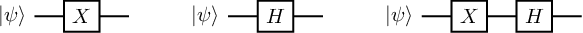
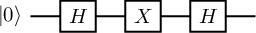
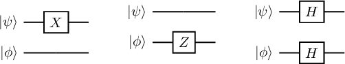

Ch1-Lecture 3¶
\(Z\) Gate¶
The \(Z\) gate, on the other hand, has no classical analogue. It acts as
In other words, Z leaves \(\left|0\right\rangle\) invariant, but injects a “phase” of −1 in front of \(\left|1\right\rangle\). This also immediately shows that \(\left|0\right\rangle\) and \(\left|1\right\rangle\) are eigenvectors of Z with eigenvalues 1 and −1, respectively.
The Z gate is special in that it allows us to inject a relative phase into a quantum state. For example,
By relative phase, we mean that only the amplitude on \(\left|1\right\rangle\) had its sign changed (or more generally, was multiplied by a phase \(e^{i\pi} = −1\)). If all the amplitudes in the state were instead multiplied by \(e^{i\pi}\) , then we could simply factor out the eiπ from the entire state — in this case,we would call \(e^{i\pi}\) a global phase. It turns out that a global phase is insignificant in that it cannot be experimentally detected. A relative phase may seemingly also look unimportant - yet, as we shall see in this course, it is one of the features of quantum mechanics which allows quantum computers to outperform classical ones!
Hadamard Gate¶
Finally, we come to a fourth important unitary gate, the Hadamard gate:
The Hadamard gate is special in that it creates superpositions for us. Namely, we have \(H\left|0\right\rangle =\left|+\right\rangle\) and \(H\left|1\right\rangle =\left|-\right\rangle\). It can also “erase” superpositions, i.e. \(H\left|+\right\rangle =\left|0\right\rangle\) and \(H\left|-\right\rangle =\left|1\right\rangle\) . In other words, \(H\) is self-inverse — we have that \(H^2 = I\) for \(I\) the identity matrix. In fact, the Pauli matrices are also self-inverse.
Send it after class 1¶
Verify that \(H\left|0\right\rangle =\left|+\right\rangle\) and \(H\left|1\right\rangle\). Also verify \(H^2=I\)
Quantum Circuits¶
A quantum circuit is a graphical model for depicting quantum computation. The quantum computation is represented by a sequence of quantum gates, measurements, initializations of qubits to known values, and etc. For example, here are three circuits:

They correspond to evolutions \(X\left|\psi\right\rangle \), \(H\left|\psi\right\rangle\), and \(HX\left|\psi\right\rangle \), respectively. Each wire in such a diagram denotes a quantum system, and a box labelled by gate \(U\) depicts the action of unitary \(U\) . We think of time going from left to right; for the last circuit above, note that the \(X\) appears on the “left” in the circuit diagram but on the “right” in the expression \(HX\left|\psi\right\rangle \); this is because \(X\) should be applied first to \(\left|\psi\right\rangle \), then \(H\).
Send it after class 2¶
What single-qubit state does the following circuit output? (Hint: Rather than explicitly calculating this, try to use your knowledge of the action of \(H\) on states \(\left|0\right\rangle\) and \(\left|1\right\rangle\) and the eigenvectors of \(X\).)

Postulate 3: Composite Quantum Systems¶
Thus far, we have considered only single quantum systems, i.e. states \(\left|\psi\right\rangle\in \mathbb{C}^d\) for \(d\geq 2\). We need multiple qubits interacting simultaneously for quantum computation. How can we mathematically describe, for example, the joint state of two qubits? The correct Linear Algebraic tool for this task is the tensor product, denoted \(\otimes\). The tensor product allows us to “stitch together” two vectors. For example when two states \(\left|\psi\right\rangle,\left|\phi\right\rangle\in \mathbb{C}^2\) interact, it results in a larger 4-dimensional vector given by \(\left|\psi\right\rangle\otimes\left|\phi\right\rangle\in \mathbb{C}^4\) . Formally, we have \(\mathbb{C}^2\otimes\mathbb{C}^2=\mathbb{C}^{2\times2}\) . In other words, the entries of a vector \(\left|\psi\right\rangle\otimes\left|\phi\right\rangle\in \mathbb{C}^2\otimes\mathbb{C}^2\) can be referenced via a pair of indices \((i, j)\) for \(i, j \in {0, 1}\), and the specific rule for doing so is
where recall \(\psi_i\) and \(\phi_j\) are the entries of \(\left|\psi\right\rangle\) and \(\left|\phi\right\rangle\), respectively. Here, you should think of the pair \((i, j)\) as representing the bits of a single index \(x \in {0, 1, 2, 3}\). So for example, \((0, 0)\) is equivalent to index 0, (0, 1) to index 1, and (1, 1) to index 3. This implies that we can think of \(\left|\psi\right\rangle\otimes\left|\phi\right\rangle\) as having four entries, i.e. \(\left|\psi\right\rangle\otimes\left|\phi\right\rangle\in \mathbb{C}^4\) . Let us demonstrate with some examples:
Send it after class 3¶
Verify that $\( \left|1\right\rangle\otimes\left|0\right\rangle= \begin{pmatrix}0 \\ 1 \end{pmatrix} \otimes \begin{pmatrix}1 \\ 0 \end{pmatrix}=\begin{pmatrix}0 \\ 0 \\ 1 \\ 0 \end{pmatrix} \qquad \left|1\right\rangle\otimes\left|1\right\rangle= \begin{pmatrix}0 \\ 1 \end{pmatrix} \otimes \begin{pmatrix}0 \\ 1 \end{pmatrix}=\begin{pmatrix}0 \\ 0 \\0\\1\end{pmatrix} \)$
Note that in the four equations above, the four-dimensional vectors obtained are just the computational basis vectors for \(\mathbb{C}^4\) ! This hints at an important fact: If we take orthonormal bases \(B_1 = \left\{\left|\psi_0\right\rangle, \left|\psi_1\right\rangle\right\}\) and \(B_2 = \left\{\left|\phi_0\right\rangle, \left|\phi_1\right\rangle\right\}\) , then we can obtain an orthonormal basis for \(\mathbb{C}^4\) by tensoring together the elements of \(B_1\) and \(B_2\) in all four possible combinations, i.e. \(\left\{\left|\psi_0\right\rangle\otimes\left|\phi_0\right\rangle, \left|\psi_0\right\rangle\otimes\left|\phi_1\right\rangle,\left|\psi_1\right\rangle\otimes\left|\phi_0\right\rangle,\left|\psi_1\right\rangle\otimes\left|\phi_1\right\rangle \right\}\) forms an orthonormal basis for \(\mathbb{C}^4\) . For brevity, we shall often drop the notation \(\otimes\) and simply write \(\left|\psi\right\rangle\otimes\left|\phi\right\rangle=\left|\psi\right\rangle\left|\phi\right\rangle\).
Send it after class 4¶
Compute $\( \left|1\right\rangle\left|-\right\rangle \qquad \left|+\right\rangle\left|+\right\rangle \)$
Our discussion thus far generalizes straightforwardly to the case of \(\mathbb{C}^{d_1}\otimes\mathbb{C}^{d_2}\) . Specifically, for \(\left|\psi\right\rangle\in \mathbb{C}^{d_1}\) and \(\left|\phi\right\rangle\in \mathbb{C}^{d_2}\) , we have that \(\left|\psi\right\rangle\otimes\left|\phi\right\rangle\in\mathbb{C}^{d_1d_2}\). Then, for \(i \in {0, . . . , d_1 − 1}\) and \(j \in {0, . . . , d_2 − 1}\), we have \(\left(\left|\psi\right\rangle\otimes\left|\phi\right\rangle\right)(i,j):=\psi_i\phi_j\) . Thus, for example, if we add a third qubit to our existing two qubit system, then we have a state which lives in \(\mathbb{C}^{4}\otimes\mathbb{C}^{2}=\mathbb{C}^{8}\) . In fact, for each qubit we add to our system, the dimension grows by a factor of 2, i.e. it grows exponentially — in general, an \(n\)-qubit state will correspond to a vector \(\left|\psi\right\rangle\in \mathbb{C}^{2^n}\)! It is precisely this exponential growth in complexity which makes it difficult for classical computers to simulate the mechanics of an \(n\)-qubit quantum state — indeed, this was the reason why physicist Richard Feynman proposed the concept of a quantum computer in 1982 to begin with!
Finally, the tensor product has the following important properties for any \(\left|a\right\rangle,\left|b\right\rangle\in \mathbb{C}^{d_1}\) and \(\left|c\right\rangle,\left|d\right\rangle\in \mathbb{C}^{d_2}\) , which we will use repeatedly:
Send it after class 5¶
What are the inner products of \(\left|0\right\rangle\left|1\right\rangle\) and \(\left|1\right\rangle\left|0\right\rangle\) ; \(\left|0\right\rangle\left|0\right\rangle\), and \(\left|+\right\rangle\left|-\right\rangle\)?
Quantum Entanglement¶
Now that we know how to stitch together a pair of single qubit states, it turns out we have opened Pandora’s box. For we can now talk about the two-qubit state which troubled Einstein to the end of his days — the innocuous-looking Bell state:
This state demonstrates a quantum phenomenon known as entanglement — intuitively, if a pair \(q_0\) and \(q_1\) of qubits are entangled, then they are so “tightly bound” that one cannot accurately describe the state of \(q_0\) or \(q_1\) alone — only the joint state of \(q_0\) and \(q_1\) can be described precisely. In the language of tensor products, this is captured by the following statement: There do not exist \(\left|\psi_1\right\rangle,\left|\psi_2\right\rangle\in \mathbb{C}^d\) such that \(\left|\Phi^+\right\rangle=\left|\psi_1\right\rangle\otimes\left|\psi_2\right\rangle\). In 1935, Einstein, Podolsky and Rosen published a famous paper nowadays referred to as the “EPR” paper, in which they argue that quantum mechanics cannot be a complete physical theory because it allows the existence of states such as \(\left|\Phi^+\right\rangle\). Fast forwarding a number of decades, we now not only believe entanglement is real, but we know that is is necessary resource for quantum computers to outperform classical ones.
We shall later return to the topic of entanglement, but for now let us remark that there are three other such Bell states:
Note that here we have further simplified notation by letting (e.g.) \(\left|0\right\rangle\left|0\right\rangle=\left|00\right\rangle\). The four Bell states \(\left\{\left|\Phi^+\right\rangle, \left|\Phi^-\right\rangle, \left|\Psi^+\right\rangle, \left|\Psi^-\right\rangle\right\}\) form an orthonormal basis for \(\mathbb{C}^{4}\) known as the Bell basis, after Northern Irish physicist John Bell.
Send it after class 6¶
Verify that the Bell basis indeed forms an orthonormal basis, i.e. check that the Bell states are pairwise orthogonal unit vectors.
Two-qubit quantum gates.¶
We have seen that two-qubit quantum states are described by unit vectors in \(\mathbb{C}^{4}\) . We can thus discuss two-qubit quantum gates, i.e. unitary operators \(U \in\mathcal L (\mathbb{C}^{4})\). There are two types of such gates: The first are simply tensor products of one-qubit gates, such as \(X \otimes Z\) or \(H \otimes H\). Here, the tensor product is defined analogously for matrices as it is for vectors. (The formal description is cumbersome, but we follow with a helpful illustration to clarify.) For any \(A \in\mathcal L (\mathbb{C}^{d_1})\),\(B \in\mathcal L (\mathbb{C}^{d_2})\) , \(A \otimes B\) is a \(d_1d_2 \times d_1d_2\) complex matrix whose entries are indexed by \(([d_1] \times [d_2], [d_1] \times [d_2])\) (where \([d] = \{0, . . . , d − 1\}\) here), such that
To clarify this definition, suppose
Then \(A\otimes B\) is
In other words, \(A\otimes B\) is obtained by taking four copies of \(B\), each time multiplying by a different scalar entry of \(A\).
The tensor product for matrices shares the properties of the tensor product for vectors, with the addition of two rules below:
In terms of circuit diagrams for tensor products of unitaries are like below: (We consider the cases of \(X \otimes I\), \(I \otimes Z\), and \(H \otimes H\), respectively.)

Finally, we can also consider genuinely two-qubit gates, i.e. gates which are not the tensor product of single qubit gates. One important such gate is the controlled-NOT gate, denoted CNOT. The CNOT treats one qubit as the control qubit, and the other as the target qubit. It then applies the Pauli \(X\) gate to the target qubit only if the control qubit is set to \(\left|1\right\rangle\). More precisely, the action of the CNOT on a two-qubit basis is given as follows, where qubit 1 is the control and qubit 2 is the target
The CNOT gate is given by matrix:
where the second expression is in block matrix form with \(I\) and \(X\) the identity and \(X\) matrices.
The circuit diagram for the CNOT is given by

With this in hand, we can do our first interesting computation — we can prepare the Bell state \(\Phi^+\) starting from an initial state of \(\left|00\right\rangle\) The preparation circuit is given as:

Send it after class 7¶
What is \(X \otimes I\)? How about \(Z \otimes H\)?
What is \((Y \otimes Y)(Y \otimes Y)\) ? How about \(\text{Tr}(X \otimes X)\)?
What are the circuit diagrams for \(Z \otimes Z\), \((X \otimes X)\left|01\right\rangle\)?
What is the equivalent of the Bell state circuit above?